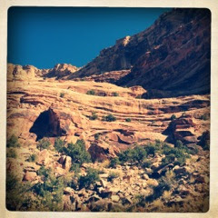
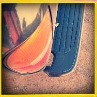
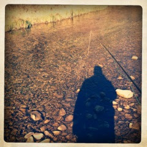
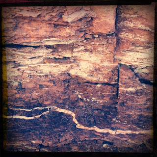
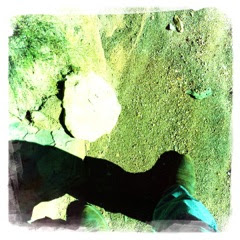
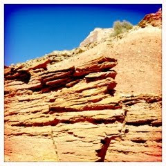
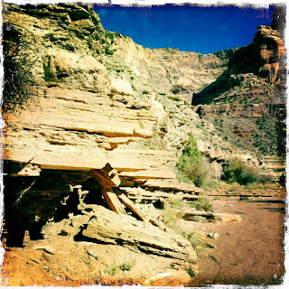
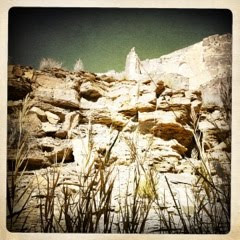

Recovered weblog entry
The Swell and Back

Lens: Tejas
Film: Ina's 1969
There are a variety of lenses and films used here; so much color and beauty along this way. I'm very seldom sure of what to do to capture the colors naturally inherent in the high desert that is our home
Lens: Tejas
Film: Big Up

Lens: Tejas
Film: Ina's 1969

Lens: Tejas
Film: Big Up

Lens: Matty ALN
Film: Dream Canvas

Lens: Watts
Film: Blanko

Lens: John S
Film: Kodot XGrizzled

Lens: LIbatique 73
Film: Ina's 1969

Hope you enjoy the images, one way t'other...